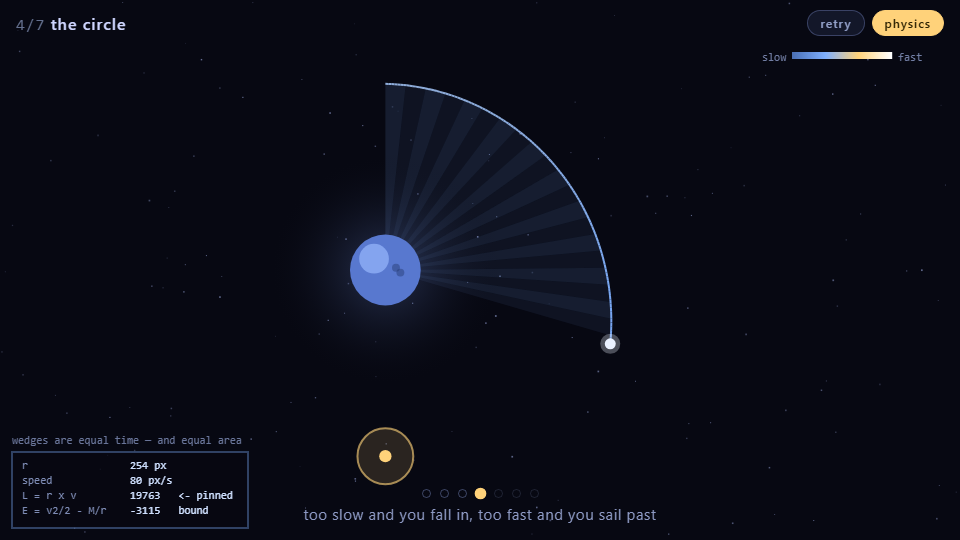
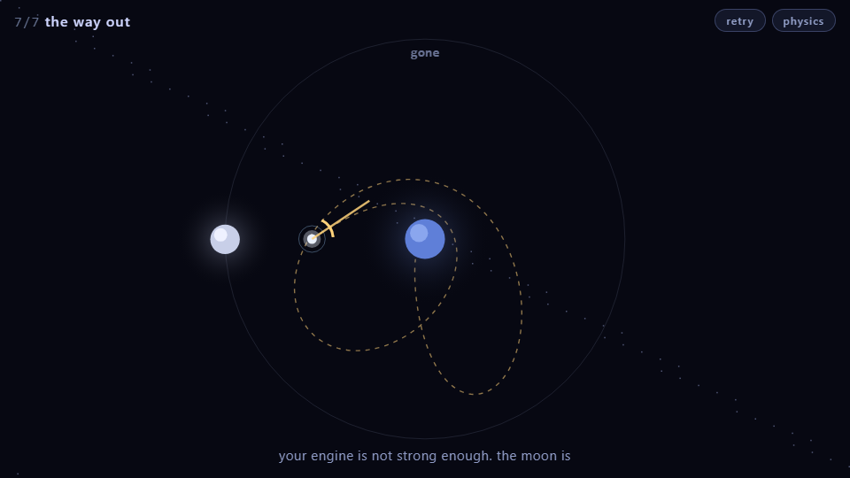

SLINGSHOT
any browser, phone included · one gesture · seven levels
What it is
Drag back from the probe and let go. That is the entire game.
Everything after the release is Newtonian gravity with nothing added —
a = Σ M/r² toward each body, integrated with velocity Verlet. The path bends
because mass bends it. There is no fuel, no steering, no second chance mid-flight.
Seven levels. By the last one your engine is provably too weak to leave, and the only way out is to fall past a moving moon and come away carrying speed that used to be the moon's. That is a gravity assist, and it is how every probe we have sent to the outer planets actually got there.

Where the mathematics actually shows up
The engine conserves angular momentum L = r × v to
2×10⁻¹² % — not because it is enforced anywhere, but because velocity
Verlet is symplectic and a central force has no torque about its centre. That was measured,
not assumed. The problem was that it was invisible, so the game now draws it.
Press physics and the probe starts sweeping out wedges from the planet at
fixed time intervals. They come out equal in area. That is
Kepler's second law, and it is the same statement as L being
constant — near the planet you are moving fast over a short radius, far away you are moving
slowly over a long one, and the product does not change.
The trail is also coloured by speed, from deep blue to white-hot, which is what makes a gravity assist something you watch happen rather than something the game tells you about.

L = r × v sits pinned at 19763 while r and the speed both change.
E = v²/2 − M/r is negative, which is what bound means: this one is not
leaving.Why gravity, after four attempts at something else
Three earlier builds tried to make a game out of NMR and out of quantum tunnelling. They failed in different ways, and the diagnosis that came out of it is the useful part:
A game mechanic has to be visible, deterministic, and steerable.
- Visible — you can watch the cause produce the effect.
- Deterministic — the same input gives the same result, so you can learn.
- Steerable — your skill changes the outcome.
Quantum tunnelling fails the last two: a coin flip carries no information, so missing teaches nothing. NMR dephasing fails the first — it is invisible. Newtonian gravity passes all three cleanly, which is why Spacewar! managed it in 1962 on a machine with no memory to spare.
The physics was proved before any of it was drawn
A headless harness answered the questions first, so no design decision rested on hope.
| Question | Answer |
|---|---|
| Does an orbit stay an orbit? | 20 laps: radius held 200.0–200.0 px, energy drift 0.000% |
| Is there a band between crashing and escaping? | crash below 50 px/s, orbit 50–130, escape above — 85 px/s wide |
| Does a gravity assist really gain speed? | +43 px/s off a moon moving 130 |
| Can the last level be made impossible without the moon? | yes, and provably |
That last one is the part I am happiest with. Cap the launcher below escape velocity and the
furthest any launch can possibly reach follows from the energy — r = 1006. Brute
force over every angle and every power agrees exactly: 1006. The boundary
ring sits at 1150, so it is unreachable by 144 px no matter what you do. Not a playtest — a
proof. With the moon, 13.9% of launches get out.

Is it actually playable?
The claim is that missing tells you where to go. Sweeping aim across level 3 at fixed power:
-40° 394 px ################################ -28° 248 px ##################### -20° 128 px ########### -12° HIT -8..+8 crash <- straight at it +12° HIT +40° 394 px ################################
A clean funnel on both sides: every step toward the solution shrinks the miss.
So the test is whether a player who only ever adjusts toward a smaller miss can finish. A bot that does exactly that — no knowledge of the answer, no cleverness — solved all seven: 13, 15, 10, 13, 9, 40, 21 shots. The 40 is level 6, the three-body one, and that spike is deliberate.
The same test caught the real bugs, as usual: a bad shot used to zoom the camera out until the level was unreadable, a miss could cost eighteen seconds before you could try again, and level 2 was harder than level 6. All fixed.
The finish screen does not take the physics on trust either. When you finally get out, the game re-flies that exact launch with the moon deleted and nothing else changed, and reports how far it gets: r = 1006, against a boundary at 1150. That is the analytic number, recomputed live from whatever you actually did.
Also here
Every game in this repository has its own page and its own address: the arcade →
The earlier builds, kept and honestly labelled: THROUGH (a platformer on real quantum tunnelling), an NMR shimming trainer and its Bloch sandbox, Agreement, and Pixel Plumber, where it started. Plain canvas throughout — no engine, no dependencies, no build step.